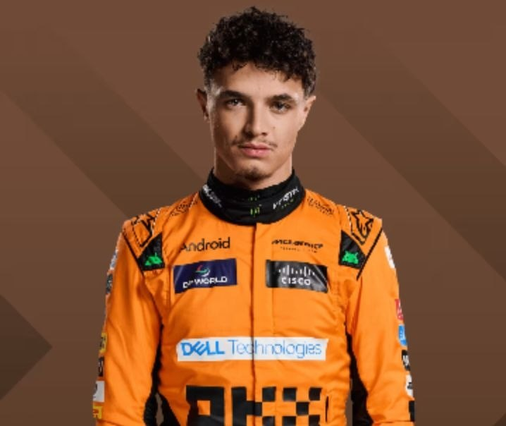
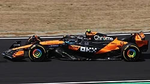
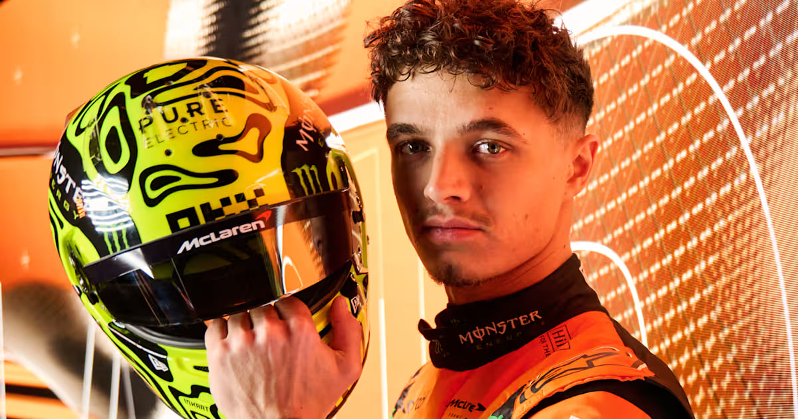

our project: Lando Norris
Lando Norris is a famous racing driver from Britain. He is 26 years old.
He drives in Formula 1, which is the top motorsport championship in the world. Lando is very fast and drives for the famous McLaren
team. He is the reigning World Champion because he won the title last year. Now, his racing car has the number 1 on it. He started
racing go-karts when he was a young child because he loved speed. Today, millions of fans love him because he is friendly, honest, and
very funny. In his free time, Lando likes playing video games, streaming, and managing his own gaming brand, Quadrant.
1. Where is Lando Norris from?
2. What team does Lando drive for?
3. What does Lando like to do in his free time?

Norris gained 1 world champion title , 11 times won in races ,
16 pole positions, 18 fastest laps and 44 podiums in Formula 1.
He will stay in McLaren at least until end of 2027 race season

Next season, Lando wants to win even more races. He practices every day to prepare for difficult tracks.
His team, McLaren, helps him make his car very fast.
Millions of fans visit races just to see him drive. During race weekends,
Lando is always focused on his goals. His family supports him and attends almost every big race.
Even though he is famous, Lando is still a very kind person.
He also helps young people who love racing. His hard work inspires many children to follow their dreams.
Finally, Lando proves that teamwork can bring great success.
what is lando's wish?
on what Lando always focused
Lando Norris born in Bristol , England . In rich family . His father - Adam Noris ,
retired pension manager,one of the richest peoples in
Bristol . His mother - Siska , born in Bauman,comes from the Flanders region of Belgium. He has two younger sisters ,
and older brother Oliver who also raced karting professionally until 2014. Norris holds both British and Belgian citizenship.
He left school without receiving a general secondary
education certificate, but continued to engage in karting professionally.
when his brother stopped raced professionally?
what is his mother name ?
in what town he born?
